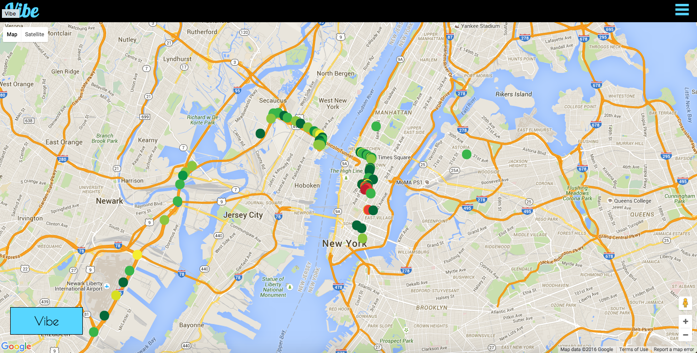
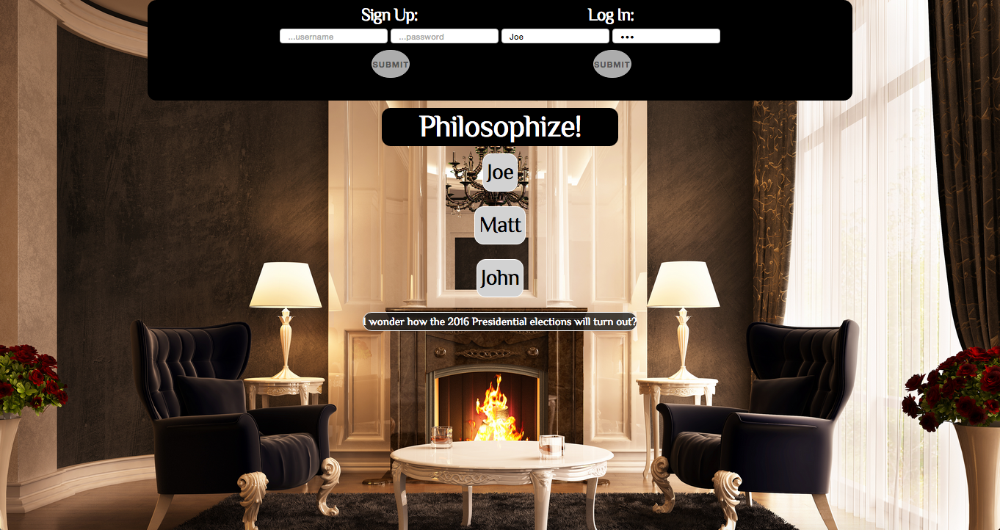
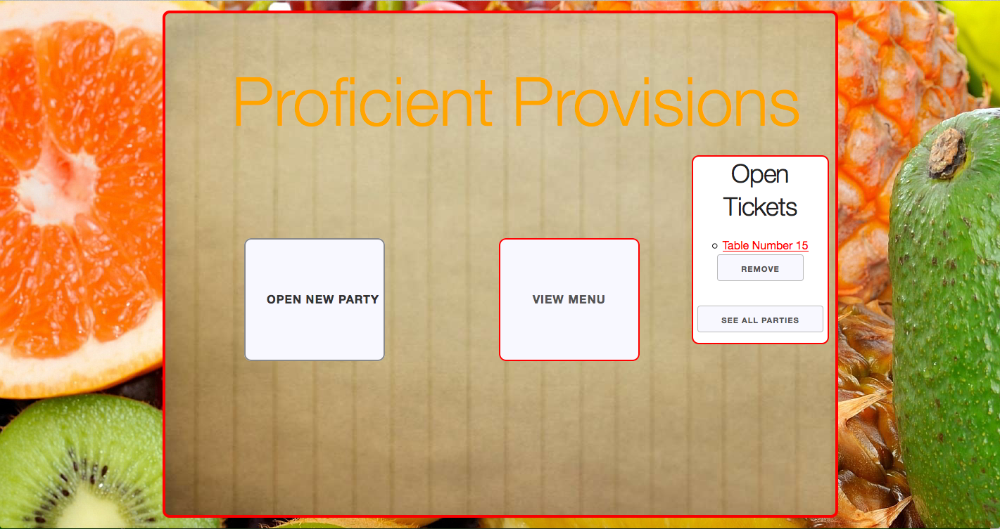
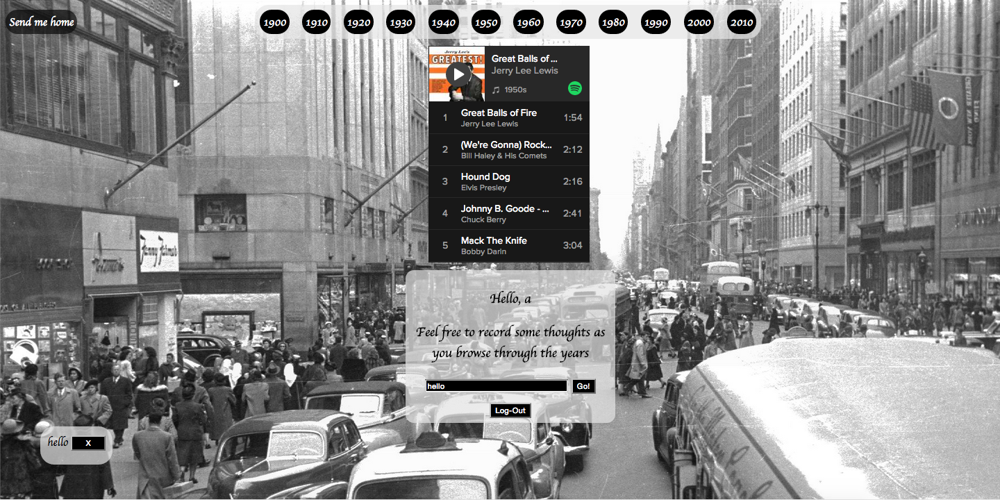

Hello and Welcome!
This is my about me This is my about me This is my about me This is my about me This is my about me This is my about me This is my about me This is my about me This is my about me This is my about me This is my about me This is my about me This is my about me This is my about me This is my about me This is my about me This is my about me This is my about me This is my about me This is my about me This is my about me This is my about me This is my about me
View my Resume
SKILLS
JavaScript | Ruby | SQL | HTML5 | CSS3
Rails | Express.js | Backbone.js | AngularJS
PostgreSQL | MongoDB | MySQL | Skeleton CSS
| Vibe A social application built with Ruby on Rails framework and utilizes a PostgreSQL database. Allows the user to map their current mood as a colored rating to the Google Map API, alongside other users’ posts to visualize moods in a certain geographic location.  |
Armchair Philosophy A lightweight blogging application built using Backbone.js and the MEAN stack. Designed for users to log thoughts with intent to discuss daily philosophies with other users. The main profile page lists other usernames and all related posts to those usernames.  |
| Proficient Provisions A food service application using Sinatra and a PostgreSQL database. To be used by wait staff, the user can record and track orders placed by the party. Once an order is placed, the proper table on the grid will turn red to denote a filled table.  |
Musical Timeline A musically themed web experience which allows users to create profiles and reflect on popular American music from previous decades as they listen. Built in Rails using the Spotify Web Player with Backbone.js.  |